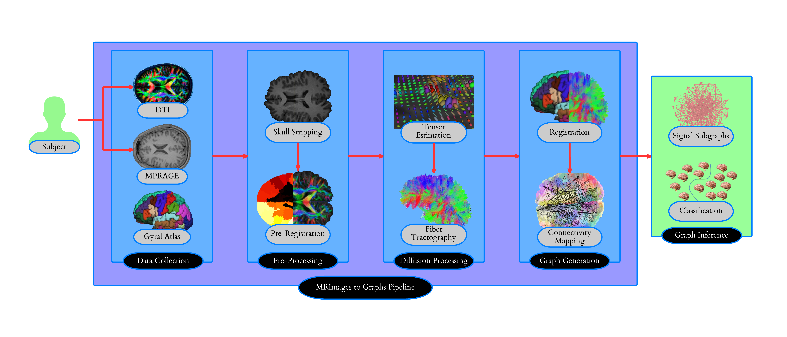

Pipeline and tools for estimating graphs from MRI data
We are a part of the Open Connectome Project based out of Johns Hopkins University.
Checkout any of the links here to learn more about us and the work we do -- if you like it, feel free to join in!
